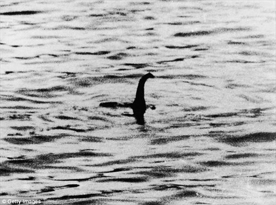

未確認生物研究所へようこそ
このサイトでは、世界中で目撃されている
UMA（未確認生物）や宇宙人について紹介しています。
不思議な生物や都市伝説を楽しく学べるサイトです。

今週の注目UMAは ネッシー です。
最終更新日：2026年6月10日
UMA図鑑
世界各地で発見されたUMAを紹介します。 写真や特徴、目撃情報などを掲載します。
更新スケジュール： 毎週水曜日更新
人気UMAランキング
- ネッシー
- ビッグフット
- ツチノコ
宇宙人特集
グレイ型宇宙人や火星人など、 有名な宇宙人について解説します。
更新スケジュール： 毎月1日更新
目撃情報コーナー
世界中から集めた不思議な目撃情報や 体験談を紹介します。
更新スケジュール： 毎日更新